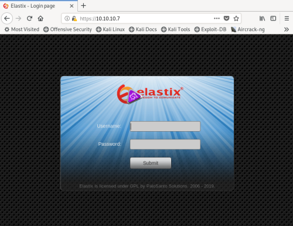

# Elastix
Elastix is collection of open source tools that helps users build a
PBX - a
Private Branch Exchange.
A Private Branch Exchange is a phone system where users can call both internally within the company, and externally using a shared phone line. Think of call centres.
Elastix includes PBX, IP PBX (VoIP, basically), email, instant messaging, faxing and collaboration tools.
This explains why there might be so many services running on a box - they're all tied into Elastix.
Note by looking in the URL bar that the you've probably been redirected to https -
https://10.10.10.7If you see these ports open on a box, the box is probably running Elastix:
22/tcp open ssh OpenSSH 4.3 (protocol 2.0)
25/tcp open smtp Postfix smtpd
80/tcp open http Apache httpd 2.2.3
110/tcp open pop3 Cyrus pop3d 2.3.7-Invoca-RPM-2.3.7-7.el5_6.4
111/tcp open rpcbind 2 (RPC #100000)
143/tcp open imap Cyrus imapd 2.3.7-Invoca-RPM-2.3.7-7.el5_6.4
443/tcp open ssl/https?
878/tcp open status 1 (RPC #100024)
993/tcp open ssl/imap Cyrus imapd
995/tcp open pop3 Cyrus pop3d
3306/tcp open mysql MySQL (unauthorized)
4190/tcp open sieve Cyrus timsieved 2.3.7-Invoca-RPM-2.3.7-7.el5_6.4 (included w/cyrus imap)
4445/tcp open upnotifyp?
4559/tcp open hylafax HylaFAX 4.3.10
5038/tcp open asterisk Asterisk Call Manager 1.1
10000/tcp open http MiniServ 1.570 (Webmin httpd)